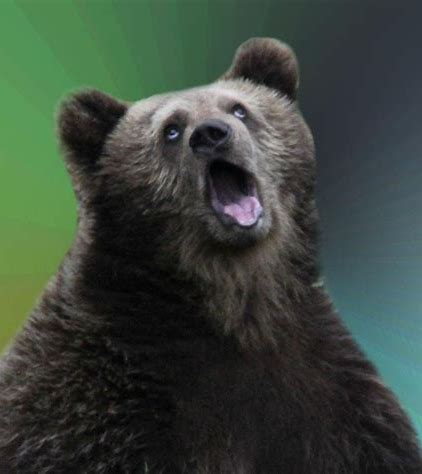
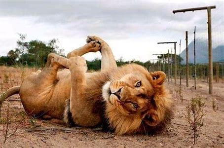
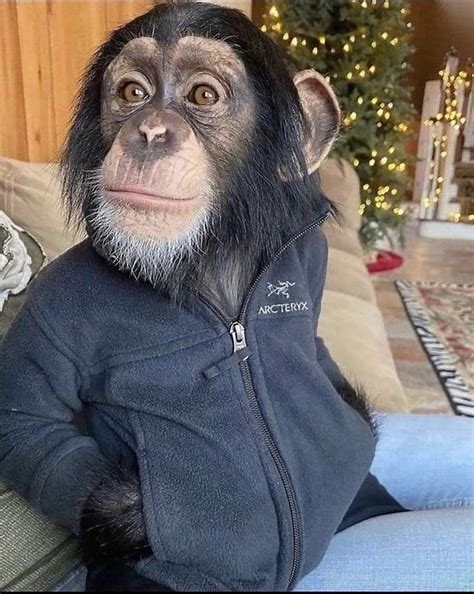
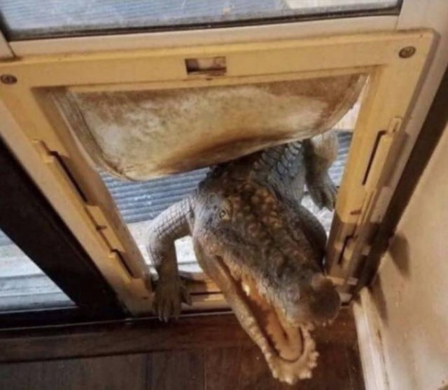

Bears

- Ollie
Ollie is an adventurous bear with a playful spirit. Known for his curiosity, he loves to explore his surroundings, whether it's climbing trees or discovering new berries to snack on. Ollie's friendly nature makes him a favorite among zookeepers and fellow bears alike.
- Mona
Mona is a gentle and nurturing bear who enjoys the tranquility of her habitat. She often lounges by the water, bathing in the sun. Mona is protective and caring, especially towards the younger bears, and she has a talent for sniffing out interesting scents in her environment.
Bear Facts
Giraffes
.jpg)
- Frankie
Frankie is a tall and graceful giraffe with a gentle personality. He is known for his patterned coat and his curiosity about everything around him. Frankie loves to nibble on leaves from the tallest branches and often enjoys wandering around his habitat, exploring every nook and cranny. His calm presence makes him a favorite among visitors and zookeepers.
- Coconut
Coconut is an energetic and playful giraffe who always seems to be on the move. She has a distinctive coat with unique spots that set her apart from the rest. Coconut loves to interact with other giraffes and is often seen running around and playing with them. Her playful nature and friendly attitude make her a joy to watch.
Giraffes Facts
Lions

- Mella
Mella is a majestic and regal lioness with a confident and commanding presence. She is known for her keen hunting skills and her ability to lead and protect her pride. Mella has a beautiful, sleek coat and a strong, muscular build. She is often seen patrolling her territory and ensuring the safety of her pride members. Her calm and composed demeanor makes her an excellent leader.
- Karl
Karl is a powerful and impressive male lion with a magnificent mane that showcases his strength and dominance. He is known for his fierce and protective nature, always ready to defend his pride from any threats. Karl has a deep roar that resonates through the savannah, marking his presence. He enjoys lounging in the sun and watching over his territory, ensuring that everything is in order.
Lion Facts
Monkeys

- Cookie
Cookie is a mischievous and energetic monkey who loves to explore and play. Known for her clever tricks and acrobatics, she is always the center of attention. Cookie enjoys swinging from tree branches and finding hidden treats. Her playful antics never fail to entertain those around her.
- Earl
Earl is a wise and observant monkey with a calm demeanor. He often takes on the role of the group's guardian, watching over his fellow monkeys. Earl enjoys spending time grooming his friends and maintaining harmony within the group. His thoughtful nature and gentle presence make him a respected member of the troop.
- Banana Pudding
Banana Pudding is a quirky and fun-loving monkey with a distinctive personality. He has a knack for making everyone laugh with his playful behavior and love for bananas. Banana Pudding enjoys playing games and solving puzzles, always eager to show off his intelligence. His joyful and lighthearted attitude brings happiness to everyone around him.
Monkey Facts
Alligators

- Wren
Wren is a stealthy and agile alligator known for her swift movements and keen hunting instincts. She has a sleek, dark-green body that helps her blend seamlessly into her surroundings. Wren is a master of patience, often lurking just beneath the water's surface, waiting for the perfect moment to strike. Her sharp senses and quick reflexes make her a formidable predator.
- Aspen
Aspen is a strong and resilient alligator with a calm and composed demeanor. He has a robust build and a distinctive pattern on his scales. Aspen is often seen basking in the sun, conserving his energy for when it's needed most. Despite his imposing appearance, he is quite protective of his territory and is known to fiercely defend it from any intruders.
- Mika
Mika is a curious and observant alligator who loves to explore her environment. She has bright, alert eyes and a slightly lighter coloration than her companions. Mika enjoys investigating new areas and is always on the lookout for interesting sights and sounds. Her inquisitive nature often leads her to discover new hiding spots and vantage points within her habitat.
Alligator Facts